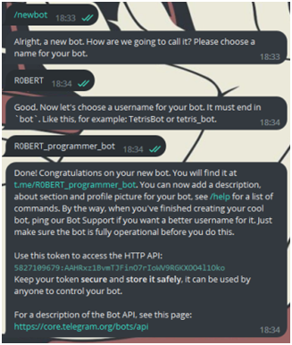
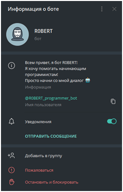
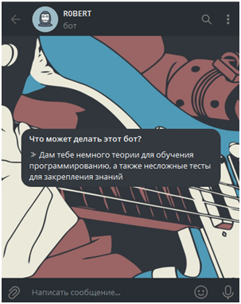
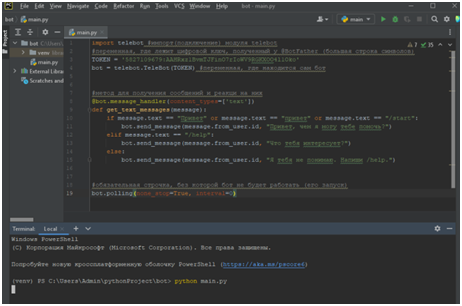
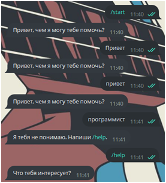

Написание структуры

Мы определились с задачей, которую будет выполнять бот, установили все нужные файлы для работы.
В приложении Telegram бота нужно зарегистрировать. Делается это очень легко. Находим бота @BotFather и пишем
команду /start или /newbot.
Если Вы ввели команду /start, то выбираем из предложенного списка команду /newbot.
Теперь нам нужно выбрать имя бота, я назову его R0BERT. Затем нужно определиться какое имя пользователя
будет иметь бот. Имя пользователя и имя бота – не одно и то же! Имя бота – то, как он будет записан у всех
пользователей как контакт, а имя пользователя – то, как к нему можно обратиться, то есть то, что пишется после
символа «@».
Также можно добавить «аватар» боту. Для этого нужно написать команду /mybots, выбрать нашего бота и
нажать на кнопку Edit Botpic. После этого нужно будет отправить фото «аватара».
Кроме этого я создам описание в карточке пользователя со следующим текстом: «всем привет, я бот R0BERT!
Я хочу помогать начинающим программистам! Просто начни со мной диалог». Пользователь должен понимать,
что делает бот, поэтому я напишу информацию о его функциях в описании (для этого использую функцию Edit
Description): «Я дам тебе немного теории для обучения программированию, а также несложные тесты для
закрепления знаний».
Итак, вот что вышло:
 
Оформление бота мы закончили, теперь следует разобраться в том, как он вообще должен работать. Открываем PyCharm и создаём новый проект, в котором будем писать бота. Снизу находим вкладку Terminal и вводим команду:
pip install pyTelegramBotAPI
Начнётся загрузка библиотеки. Не переживайте, она не должна занять много времени. И наконец пишем первые строчки кода:
import telebot #импорт(подключение) модуля telebot
#переменная, где лежит цифровой ключ, полученный у @BotFather (большая строка символов)
TOKEN = ' '
bot = telebot.TeleBot(TOKEN) #переменная, где находится сам бот
Итак, начало положено, теперь нужно создать методы с функциями – то, что будет делать бот, на сообщения какого типа он будет отвечать, что будет отправлять:
#метод для получения сообщений и реакци на них
@bot.message_handler(content_types=['text'])
def get_text_messages(message):
if message.text == "Привет" or message.text == "привет" or message.text == "/start":
bot.send_message(message.from_user.id, "Привет, чем я могу тебе помочь?")
elif message.text == "/help":
bot.send_message(message.from_user.id, "Что тебя интересует?")
else:
bot.send_message(message.from_user.id, "Я тебя не понимаю. Напиши /help.")
И теперь последняя команда, которая зацикливает работу бота. Это позволит ему отвечать на сообщение пользователя с минимальной задержкой и работать постоянно:
#обязательная строчка, без которой бот не будет работать (его запуск)
bot.polling(none_stop=True, interval=0)
Дело за малым, прописываем в терминале строчку:
python name.py
Где name – имя файла, в котором записан код и нажимаем Enter.
Если не появилось никакой ошибки и следующая строка пустая, то мы на верном пути. Переходим в Telegram. Следует сделать проверку нашему боту.
У нас нет никаких ошибок, всё отлично работает! А это значит, что можно переходить на следующий этап.